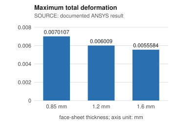
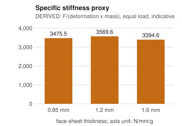

After the static analysis of Chapters 5 and 6 was completed, the project data was organised in a small engineering data management system inspired by Product Lifecycle Management (PLM) practice. Its purpose is to keep the simulation data of the three face-sheet configurations (0.85 mm, 1.2 mm and 1.6 mm) traceable to the original ANSYS files, to check the data quality automatically, and to answer comparison questions with SQL. The system is written in Python (standard library only) around a SQLite database and is stored in the project repository next to the CAD, ANSYS and report files, none of which were modified.
Table A1. Data sources used by the import
| Source | Data extracted |
|---|---|
| ANSYS Workbench archives (.wbpz), one per configuration | solve.out: solver release, run date, mesh counts, mass per body, warnings. ds.dat (MAPDL input): materials, load, fixed support. file.mntr: largest displacement component. MatML.xml: material names. .wbpj: project save time. |
| README results table | Deformation, stress and strain per thickness (rounded values). |
| Report Table 6 (page 61) | Deformation, stress (Pa) and strain at full precision. |
| Report Tables 4 and 5, Figure 11 | Material data, table labels and the 1000 N load, transcribed with page numbers and checked against the PDF text. |
The import produced 3 configurations, 3 simulation cases, 98 registered files (each with its SHA-256, including every member of the archives), 61 solver inputs and boundary conditions, 33 result values and 9 results recorded as missing. Source files are opened read-only. The binary result file (file.rst) and the Mechanical database are registered but not parsed, so directional deformation, strain energy and volume, which exist only as contour images, are recorded as missing and are not estimated.
The database has 21 tables and one view with enforced foreign keys, uniqueness constraints and indexes on the main join columns. Every stored quantity has a canonical unit (mm, MPa, g, ...); the value and unit as printed in the source are kept next to the converted value, for example 2 989 600 Pa in Table 6 is stored as 2.9896 MPa.
Table A2. Main tables
| Table(s) | Content |
|---|---|
| configuration, simulation_case, solver | Design configuration (face-sheet thickness, core and face-sheet material), its analysis, and the solver version. |
| simulation_input | Analysis settings, mesh, load, supports and material assignment; derived rows carry their formula. |
| result_metric, material_property | Results and material data with value, unit, printed value, status (ok / missing) and origin (solver file, documented, derived). Solver and report material data are stored side by side. |
| source_file, artifact_link | Every file with SHA-256 and the role it plays for each configuration (input deck, solver log, contour image, ...). |
| part, bom_line | Bill of materials per configuration (demonstration). |
| design_revision, change_request, ecr_item, ecr_status_history | Design revisions, change request, affected items, verification cases and status history (demonstration). |
| validation_run, validation_issue | Data-quality findings with severity, affected record and suggested correction. |
Each imported value can be followed to the file, archive member and line it came from. Table A3 shows this for configuration T085 (0.85 mm).
Table A3. Traceability of selected values, configuration T085 (0.85 mm)
| Item | Value | Source file | Locator | SHA-256 (first 12) |
|---|---|---|---|---|
| total_deformation | 0.0070107 mm | MAJOR PROJECT REPORT (1).pdf | report p.61 Table 6 row 0.85 | 3a80aae3a369 |
| equivalent_stress | 2.9896 MPa | MAJOR PROJECT REPORT (1).pdf | report p.61 Table 6 row 0.85 | 3a80aae3a369 |
| total_mass | 41.041 g | 0.85mm archive: solve.out | line 493 | ed9a991bc759 |
| max_displacement_component | -0.0068005 mm | 0.85mm archive: file.mntr | line 11 | a246ea634d37 |
| applied pressure | -0.144251935 MPa | 0.85mm archive: ds.dat | line 20372 | b51b3dc9d758 |
| applied force (derived) | 1000.000 N | 0.85mm archive: ds.dat | |pressure| x loaded area (derived) | b51b3dc9d758 |
Table A4. Inputs read from the solver files (identical for the three cases)
| Parameter | Value | Origin |
|---|---|---|
| Solver / analysis | ANSYS MAPDL 2025 R1 (build 25.1), static structural | solve.out |
| Mesh | 14,009 nodes, 2,093 solid elements (same for all cases) | solve.out |
| PLA core | E = 3500 MPa, ν = 0.36, ρ = 1.25 g/cm³ | ds.dat |
| ePA-CF face sheets | E = 9000 MPa, ν = 0.35, ρ = 1.15 g/cm³ | ds.dat |
| Support | all translational degrees of freedom fixed on 642 nodes | ds.dat |
| Load | pressure 0.144252 MPa on the loaded face (surface-effect elements) | ds.dat |
| Loaded area / resultant force | 6932.316 mm² / 1000.000 N (derived: sum of face areas; |pressure| × area) | derived |
The resultant force derived from the deck, 1000.000 N, equals the 1000 N load shown in Figure 11 of the report. Total mass is 41.041 g, 46.621 g and 52.999 g for 0.85, 1.2 and 1.6 mm. The core mass is 27.488 g in every case, and the face-sheet thickness implied by the solver mass, m/(ρA), is 0.850, 1.200 and 1.600 mm, which agrees with the thickness in each folder name. Solver, units, load, support, mesh counts and material data are identical in the three cases, so only the face-sheet thickness varies.
Table A5. Results by face-sheet thickness (source: report Table 6; percentage changes derived)
| Thickness (mm) | Total deformation (mm) | Equivalent stress (MPa) | Equivalent elastic strain | Deformation vs 0.85 mm | Stress vs 0.85 mm |
|---|---|---|---|---|---|
| 0.85 | 0.0070107 | 2.9896 | 0.00089581 | - | - |
| 1.2 | 0.006009 | 2.9189 | 0.00087613 | -14.29 % | -2.36 % |
| 1.6 | 0.0055584 | 2.8536 | 0.00085723 | -20.72 % | -4.55 % |

Figure A1. Maximum total deformation (source)

Figure A2. Specific stiffness proxy (derived)
Table A6. Ranking and derived stiffness per mass (equal load; F/δ with δ = maximum total deformation)
| Thickness (mm) | Mass (g) | Stiffness F/δ (N/mm) | Specific stiffness (N/mm/g) | Change vs 0.85 mm | Rank: deformation / specific stiffness |
|---|---|---|---|---|---|
| 0.85 | 41.041 | 142,639 | 3475.5 | - | 3 / 2 |
| 1.2 | 46.621 | 166,417 | 3569.6 | +2.7 % | 2 / 1 |
| 1.6 | 52.999 | 179,908 | 3394.6 | -2.3 % | 1 / 3 |
Deformation, stress and strain are lowest for the 1.6 mm face sheet, and the 0.85 mm panel is the lightest. The derived stiffness per unit mass is highest at 1.2 mm and is 2.3 % lower than the 0.85 mm value at 1.6 mm, so the statement that thicker face sheets are more efficient depends on the metric: they are stiffer, but the added mass grows almost as fast as the stiffness. The proxy assumes equal load and uses the maximum deformation, not the deflection at the load point, so it is indicative only.
42 check codes test for missing values, duplicate identifiers, wrong data types, inconsistent units, invalid geometry, material and load parameters, broken links between configurations, cases and results, comparability of the cases, and consistency between the report, the README and the solver files. Each finding is classified as error, warning or information and lists the affected record and a suggested correction. Source data is never changed. On this data the checks report 0 errors, 11 warnings and 14 information items. The warnings are listed in Table A7.
Table A7. Findings reported by the data-quality checks (none were corrected in the source files)
| Finding | Detail | Suggested correction |
|---|---|---|
| Material data, report vs solver | Table 4 gives flexural modulus 1973 / 5160 MPa and density 1.23 / 1.24 g/cm³ (PLA / ePA-CF). The solver used E = 3500 / 9000 MPa and density 1.25 / 1.15 g/cm³. | State the source of the solver material data and align Table 4 with it. |
| Table 5 labels | Core is labelled “PLA -CF” and face sheet “PLA”; the solver has a PLA core and ePA-CF face sheets. | Correct the labels. |
| Table 6 unit | The equivalent elastic strain column is labelled (mm); strain is dimensionless. | Remove the unit. |
| Duplicate project file | The loose 0.85mm Workbench project file is byte-identical to the one inside the 1.6 mm archive. | Replace it with the project file of the 0.85 mm case. |
| README claim | “Improved stiffness-to-weight ratio significantly” is not supported by the derived metric of Table A6. | Define the metric or reword the claim. |
Checks that confirm consistency passed: the README values equal the report values rounded to the README precision; the displacement component from the solver monitor lies in the mathematically possible range for the reported total deformation; the thickness implied by solver mass matches each configuration; and the load derived from the solver deck matches the report. These checks show internal consistency only. The repository contains no experimental data and no mesh-convergence study, so the physical validity of the results is not established by them.
Table A8. Demonstration bill of materials (per assembly)
| Configuration | Part number | Description | Quantity | Material |
|---|---|---|---|---|
| T085 | DEMO-HSP-2000 | Hexagonal honeycomb core | 1 | PLA |
| T085 | DEMO-HSP-3085 | Face sheet 0.85 mm | 2 | ePA-CF |
| T120 | DEMO-HSP-3120 | Face sheet 1.2 mm | 2 | ePA-CF |
| T160 | DEMO-HSP-3160 | Face sheet 1.6 mm | 2 | ePA-CF |
The core part DEMO-HSP-2000 is common to all configurations. Revision A is the 0.85 mm baseline (T085). Revision B (T160, 1.6 mm) was created by the demonstration change request DEMO-ECR-0001, “Increase face-sheet thickness from 0.85 mm to 1.6 mm”, whose status history is DRAFT → SUBMITTED → UNDER_REVIEW → IMPLEMENTED → VERIFIED. The change request lists the affected and proposed parts and configurations and links the verification simulation cases SIM-T085 and SIM-T160, whose documented maximum total deformation is 0.0070107 mm and 0.0055584 mm (-20.7 %, derived). The workflow enforces rules such as: an illegal status jump is rejected, a change request cannot be marked implemented without a revision, and it cannot be marked verified without linked simulation results.
The whole analysis is reproduced from the repository with python -m plm all (initialise, import, load demonstration data, validate, report). The command writes the engineering report, the data-quality report, the SQL query outputs and the charts to the folder generated_reports. Documented SQL queries are in the folder sql, and 78 automated tests, including deliberately injected data errors, are run with python -m unittest discover.